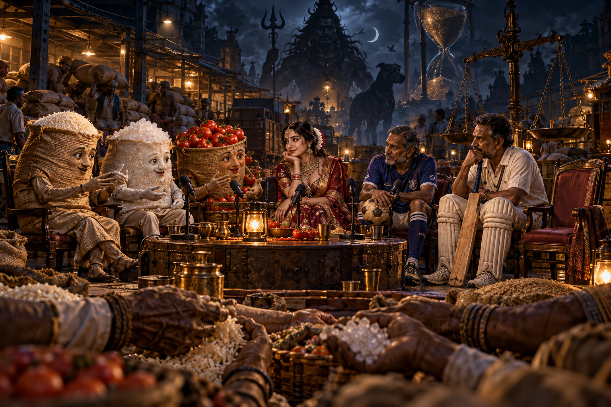

History
Earlier stories
Each new story becomes the main page. The story it replaces moves here, kept whole and unchanged, with its own address. Newest first.
Archive

FEATURE • 12 CHAPTERS
सही वक़्त पर, सही भाव में बिकना!
छह पात्रों का आधी रात का पॉडकास्ट: कीमत, क्षय, गरिमा, श्रम, अनिश्चितता और समय।

PREVIOUS BLOG • 18 FRAMES
Varun × Millie — My World Is Alive
A living multimedia archive: Millie, guardian moments, cats, Shiva, Wonderland, cargo and memory. 18 frames, each opens full-size.